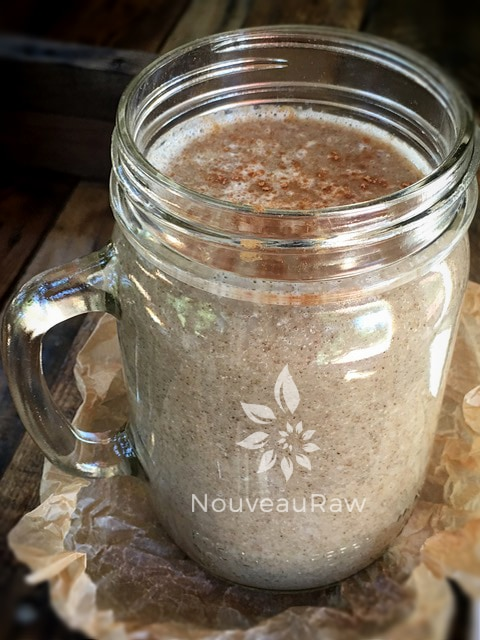

Daterade Chia Energy Sports Drink

~ raw, vegan, gluten-free, nut-free ~
This drink is for all you, Chia-Athletics! The Aztecs and Mayans are known to have consumed chia seeds regularly, grinding them into flour, pressing them for oil, and drinking them straight with water.
The Aztec warriors used chia seeds as a source of fuel before going into battle to boost endurance and stamina. Back then, chia seeds were considered to be almost magical because of their ability to increase stamina and sustain energy over long periods of time.
They help prevent dehydration, they are alkalizing to the body, rich in omega-3 fatty acids, and provide a healthy dose of dietary fiber. Chia seeds are also chucked full of anti-oxidants, contains a high-quality complete protein, are low-glycemic, and will also provide you with antioxidants, calcium, omega-6 oil, phosphorous, magnesium, iron, and zinc. Impressive huh?
Chia Seed and Date Powerhouse
But chia seeds are not the only natural energizing, amazing ingredient used in this sports drink… dates! Medjool dates are high in potassium to help balance your sodium levels and release energy from protein, fat, and carbohydrates.
They also contain copper, magnesium, and manganese. They provide “good carbs,” rating low to low/medium on the Glycemic Index (GI). A diet rich in low-GI carbs keeps your blood sugar stable, helping maintain a healthy weight and ensuring that you enjoy sustained energy without the crash you can get from snack bars and processed foods.
I had to sit back and marvel my mug of Daterade… there is more than what meets the eye going on in that glass. So the bottom line is that it will keep you full feeling, give you sustainable energy, and provide tons of nutrients to all the cells in your body. This recipe makes a large volume. I did this on purpose because I like to make it up ahead of time, pour it into pint-sized jars, and store in the fridge. That way, they are prepared for my grab-and-go travels. I hope you enjoy this recipe. Blessings, amie sue
Yields 6 cups
- 5 cups water
- 10 Medjool dates, pitted
- 1/4 cup chia seeds
Preparation:
- In the blender, combine the water, dates, and chia seeds. Blend until the dates are liquefied.
- Pour into a large jar and place the lid on tightly. Shake vigorously.
- Place in the fridge to thick for 30+ minutes. The longer it sits, the more suspended the chia seeds get after shaking.

© AmieSue.com